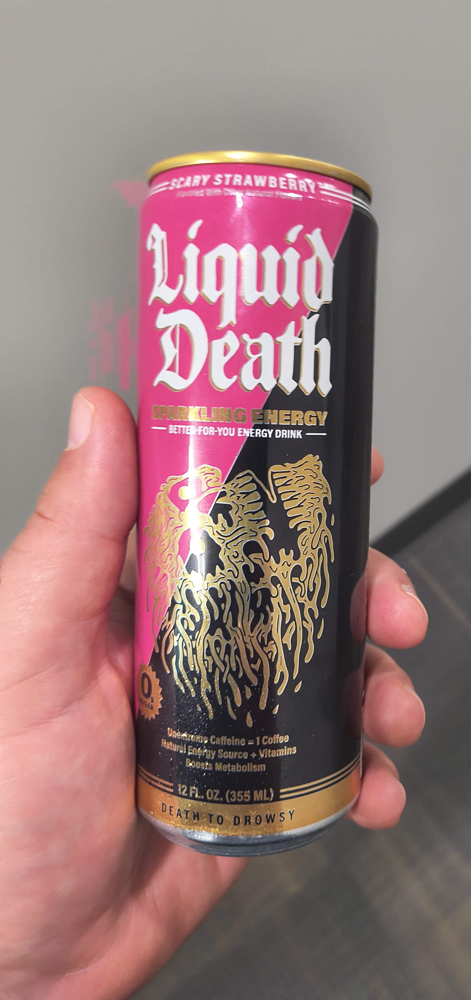

Captains Log

Energy Drinks

I don't think I'm an energy drink fanatic or freak. I typically by 5 energy drinks at Aldi every week. One for each workday that I drink at work. I don't feel like I need it, but it helps prevent me from buying a soda at the vending machine. Additionally I do enjoy the little pick me up I get, but I don't depend on it.
With that said I was at Sam's Club this past weekend and they had an 18 pack of liquid death's enetergy drink for just over $8. That's roughly $.50 a can, which is really cheap for an energy drink. It's also really cheap for liquid death. There was a reason it was so cheap...
They're TRASH!!!
I do not like them at all. The pack has 3 flavors in it, Straberry, tropical, and orange. They have some other complicated "edgy" name other than that, but I just don't care enough to know what it is. When drinking the first can I looked closer at the can and there is 0 caffein. Like maybe I just don't get it, but whats the point? Needless to say, I will not be buying anymore. Katie said she and Seth will drink them, as far as I care they can have them!
Smart Phones
I don't spend a lot of money on smart phone devices. I'm not really an Apple fan boy, despite my feelings on MacBook. I don't own an iphone. I'm also not a Samsung fan boy. I really don't like the limitations of ios for the iphone, but I understand that everyone having the same device makes support and production QA easier, but I would take that over Samsung phones. I have never had good luck with Samsung Devices.
I feel like Samsung tries to copy to much from Apple instead of embracing what makes android appealign to others. Aside from the price, the menu. I don't like how Apple, and Samsung have two seperate menus depending on what side of the screen you swipe down from. I just want to be able to swipe down and see what I need. If you feel compelled to do that make it expandable. Swipe down once, to see your notifications, swipe down a second time to see the other stuff. Putting it on one side of the screen vs the other means I have to use two hands.
I currently use a Motorola Razor. I have always enjoyed Motorola devices. I think they're made solidly, and I like the "gestures" they have built in. For instance I can shake my phone and the light will turn on. It's small, it's mabye stupid, but I love it. I also feel like even their cheap phones are pretty decent, not great, but far from a rip off. Samsungs non-flag ship phones are trash. They look ok, but they suck.
My favorite phone I ever owned was a Nokia Lumia. It ran the windows mobile os and I really liked it. I knew that the app store was limited and missing somethings that android and iphone had. I was confident at the time thought that they would catch up. It was Microsoft afterall. Man how times have changed... I have condierably less faith in that company today. But I still do miss my windows phone.
What I liked about the Windows phone:
- Price - not the cheapest but a great value for cost.
- Quality - They were as stated cheaper, but they felt good
- It was fast
- Screen was amazing!
- It was just different enough and the colors were really nice.